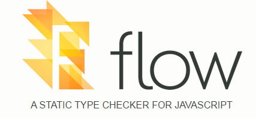

// @flow
//Primeira linha com o comentário indicando que vai ser feita checagem de tipo nesse arquivo
function square(n: number): number {
return n * n;
}
//ou ainda
function square(n/*: number*/)/*: number*/ {
return n * n;
}
Tipos
Primitivas
const x : number = 42; //só exemplo, o tipo é inferido
function acceptsString(value: string) {
// ...
}
Group of types (Union types)
function stringifyBasicValue(value: string | number) {
return '' + value;//atende todos os casos
}
Generic
function identity<T>(value: T): T {
return value;
}
Mixed
function stringify(value: mixed) {
return "" + value; // Error!
}
//Obrigado a fazer type refining
function stringify(value: mixed) {
if (typeof value === 'string') {
return "" + value; // Works!
} else {
return "";
}
}
Any
//Evitar, usar pra compatibilidade
function add(one: any, two: any): number {
return one + two;
}
Maybe
function acceptsMaybeNumber(value: ?number) {//sem essa anotação não dá pra chamar com parametro null
// ...
}
Maybe property
type Response = {
success: boolean,
value?: boolean
};
Nominal typing
class Foo { method(input: string) { /* ... */ } }
class Bar { method(input: string) { /* ... */ } }
let foo: Foo = new Bar(); // Error!
Structural typing
class Foo { method(input: string) { /* ... */ } }
class Bar { method(input: string) { /* ... */ } }
let foo: Foo = new Bar(); // Works!
Usa Structural typing
Boa adaptação com código existente
Type Aliases
type MyObject = { //Sealed (Sem novas properties)
foo: number,
bar: boolean,
baz: string,
};
type MyObject2 = {}; //Unsealed
type MyObject3 = {| //Exact (precisa de todas as properties)
foo: number,
bar: boolean,
baz: string,
|};
Outros tipos
Subtypes (especialização de tipos)
Descrição de cor como um subset de string
type cor = "AZUL" | "AMARELO" | "VERMELHO";
const corDoBalao = "VERMELHO"; //ok
const corDoBalao2 = "VERDE"; //erro
const corDoBalao3 = "Vermelho"; //erro
Quero ver funcionando